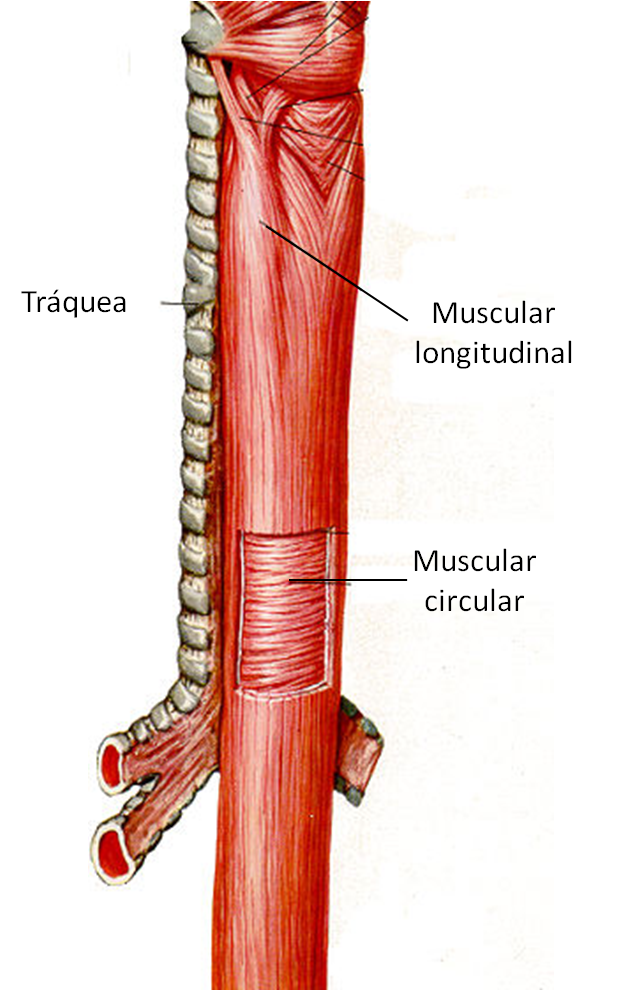

EsofagoEl esófago es una sección del aparato digestivo tanto de vertebrados como invertebrados, con forma de un tubo muscular, que comunica la faringe con el estómago. El término «esófago» deriva del idioma griego antiguo «oisophagos» (οισοφάγος), literalmente "entrar por alimentos". A través del mismo pasa el bolo alimenticio desde la faringe al estómago. Clica aqui para saber mas Volver |